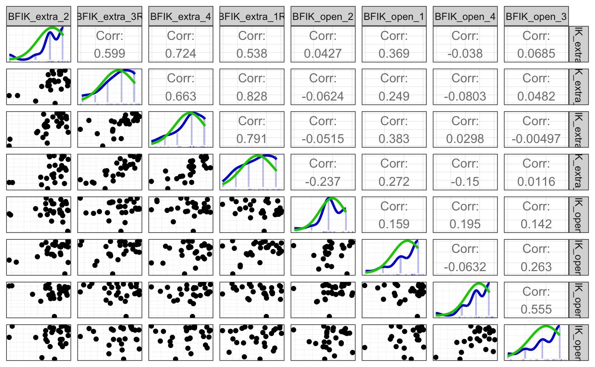
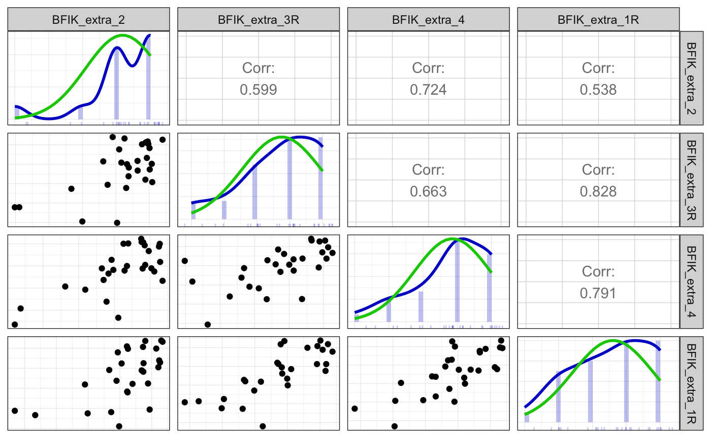
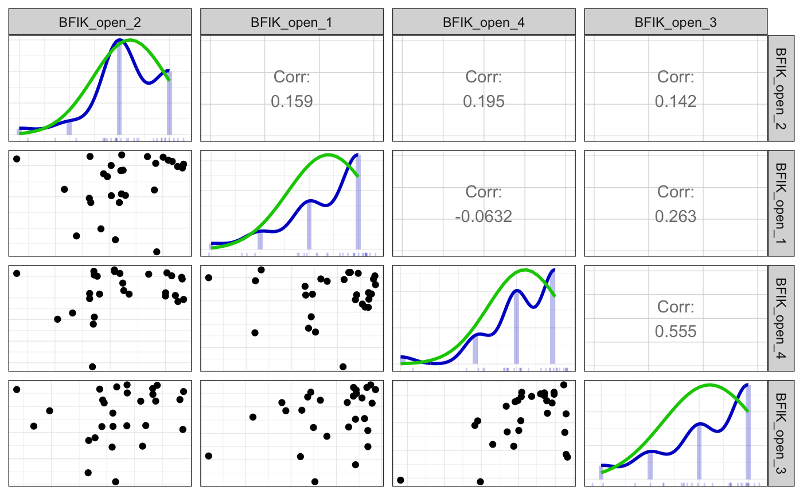

Codebook example with nested scales
Ruben Arslan
2019-02-19
Source:vignettes/codebook_nested_scale.Rmd
codebook_nested_scale.Rmdknit_by_pkgdown <- !is.null(knitr::opts_chunk$get("fig.retina"))
knitr::opts_chunk$set(warning = TRUE, message = TRUE, error = TRUE, echo = TRUE)
pander::panderOptions("table.split.table", Inf)
ggplot2::theme_set(ggplot2::theme_bw())
library(codebook)
library(dplyr)
data("bfi", package = 'codebook')Sometimes, we have scales that incorporate other scales. For example, some researchers derive the “Big Two” Alpha and Beta can be derived by averaging the lower-order “Big Five”. Here, we just demonstrate how additional scales relying on the same items as lower-order scales can be added in the codebook package. The procedure is the same, irrespective of whether scales already exist. We use the same mock BFI dataset from the main vignette here.
Here, we use the function aggregate_and_document_scale to build the “alpha” scale. We assign alpha to a new column in the data frame and we pass the constituent items as a data.frame to the function on the right-hand side. Because alpha relates to emotional stability, not neuroticism, we reverse the neuroticism items before averaging them with the rest.
bfi$alpha <- aggregate_and_document_scale(bfi %>%
select(starts_with("BFIK_agree_"), starts_with("BFIK_consc_"), starts_with("BFIK_neuro_")) %>%
mutate_at(vars(starts_with("BFIK_neuro_")), reverse_labelled_values))Alternatively, we can do the same thing using dplyr syntax. Because of some limitation in the dplyr syntax, we either explicitly name the data frame and pipe it in, or we choose not to pipe it and can use the shorthand . to refer to the currently used data frame.
bfi <- bfi %>% mutate(
alpha = aggregate_and_document_scale(bfi %>%
select(starts_with("BFIK_agree_"), starts_with("BFIK_consc_"), starts_with("BFIK_neuro_")) %>%
mutate_at(vars(starts_with("BFIK_neuro_")), reverse_labelled_values)
))
bfi <- bfi %>% mutate(beta = aggregate_and_document_scale(select(. ,
starts_with("BFIK_extra_"), starts_with("BFIK_open_"))))We then use the function var_label from the labelled package to give the scale an informative name, because the default name is just the common stem of the aggregated items. In this case, that would be the misleading abbreviation BFIK.
##
## LABELLED 2.0.0: BREAKING CHANGE
##
## Following version 2.0.0 of `haven`, `labelled()` and `labelled_spss()` now produce objects with class 'haven_labelled' and 'haven_labelled_spss', due to conflict between the previous 'labelled' class and the 'labelled' class used by `Hmisc`.
##
## A new function `update_labelled()` could be used to convert data imported with an older version of `haven`/`labelled` to the new classes.## [1] "11 BFIK items aggregated by rowMeans"var_label(bfi$alpha) <- "Alpha: higher order personality factor (consc, neuro, agree)"
var_label(bfi$beta) <- "Beta: higher order personality factor (extra, open)"To keep things short, we omit the alpha scale.
bfi <- bfi %>% select(beta, starts_with("BFIK_extra"), starts_with("BFIK_open"))
if (!knit_by_pkgdown) knitr::opts_chunk$set(echo = FALSE)metadata(bfi)$name <- "MOCK Big Five Inventory dataset (German metadata demo)"
metadata(bfi)$description <- "a small mock Big Five Inventory dataset"
metadata(bfi)$identifier <- "doi:10.5281/zenodo.1326520"
metadata(bfi)$datePublished <- "2016-06-01"
metadata(bfi)$creator <- list(
"@type" = "Person",
givenName = "Ruben", familyName = "Arslan",
email = "ruben.arslan@gmail.com",
affiliation = list("@type" = "Organization",
name = "MPI Human Development, Berlin"))
metadata(bfi)$citation <- "Arslan (2016). Mock BFI data."
metadata(bfi)$url <- "https://rubenarslan.github.io/codebook/articles/codebook.html"
metadata(bfi)$temporalCoverage <- "2016"
metadata(bfi)$spatialCoverage <- "Goettingen, Germany" # We don't want to look at the code in the codebook.
knitr::opts_chunk$set(warning = TRUE, message = TRUE, echo = FALSE)## No missing values.Metadata
Description
Dataset name: MOCK Big Five Inventory dataset (German metadata demo)
a small mock Big Five Inventory dataset
Metadata for search engines
- Temporal Coverage: 2016
- Spatial Coverage: Goettingen, Germany
- Citation: Arslan (2016). Mock BFI data.
- URL: https://rubenarslan.github.io/codebook/articles/codebook.html
- Identifier: doi:10.5281/zenodo.1326520
Date published: 2016-06-01
-
Creator:
- @type: Person
- givenName: Ruben
- familyName: Arslan
- email: ruben.arslan@gmail.com
-
affiliation:
- @type: Organization
- name: MPI Human Development, Berlin
- keywords: beta, BFIK_extra_2, BFIK_extra_3R, BFIK_extra_4, BFIK_extra_1R, BFIK_extra, BFIK_open_2, BFIK_open_1, BFIK_open_4, BFIK_open_3 and BFIK_open
Variables
Scale: beta


Reliability details
Reliability
Information about this analysis:
Observations: 28
Positive correlations: 20 out of 28 (71%)
Estimates assuming interval level:
| Index | Estimate |
|---|---|
| Omega | 0.7718436 |
| Omega Psych Tot | 0.8540002 |
| Omega Psych H | 0.3549158 |
| Omega Ordinal | 0.7372841 |
| Cronbach Alpha | 0.7263165 |
| Greatest Lower Bound | 0.8946862 |
| Alpha Ordinal | 0.7416770 |
Scatter matrix

Detailed output
##
## Information about this analysis:
##
## Dataframe: res$dat
## Items: BFIK_extra_2, BFIK_extra_3R, BFIK_extra_4, BFIK_extra_1R, BFIK_open_2, BFIK_open_1, BFIK_open_4, BFIK_open_3
## Observations: 28
## Positive correlations: 20 out of 28 (71%)
##
## Estimates assuming interval level:
##
## Omega (total): 0.77
## Omega (hierarchical): 0.35
## Revelle's omega (total): 0.85
## Greatest Lower Bound (GLB): 0.89
## Coefficient H: 0.93
## Cronbach's alpha: 0.73
## Confidence intervals:
## Omega (total): [0.64, 0.9]
## Cronbach's alpha: [0.55, 0.9]
##
## Estimates assuming ordinal level:
##
## Ordinal Omega (total): 0.74
## Ordinal Omega (hierarch.): 0.68
## Ordinal Cronbach's alpha: 0.74
## Confidence intervals:
## Ordinal Omega (total): [0.59, 0.88]
## Ordinal Cronbach's alpha: [0.59, 0.89]
##
## Note: the normal point estimate and confidence interval for omega are based on the procedure suggested by Dunn, Baguley & Brunsden (2013) using the MBESS function ci.reliability, whereas the psych package point estimate was suggested in Revelle & Zinbarg (2008). See the help ('?scaleStructure') for more information.
##
## Eigen values: 3.273, 1.719, 1.034, 0.786, 0.501, 0.389, 0.225, 0.072
## Loadings:
## TC1 TC2 TC3
## BFIK_extra_2 0.780 0.234
## BFIK_extra_3R 0.874
## BFIK_extra_4 0.899
## BFIK_extra_1R 0.921 -0.191
## BFIK_open_2 -0.196 0.824
## BFIK_open_1 0.409 0.637
## BFIK_open_4 0.908
## BFIK_open_3 0.852
##
## TC1 TC2 TC3
## SS loadings 3.245 1.555 1.20
## Proportion Var 0.406 0.194 0.15
## Cumulative Var 0.406 0.600 0.75
##
## vars n mean sd median trimmed mad min max range skew
## BFIK_extra_2 1 28 4.18 1.09 4.0 4.38 1.48 1 5 4 -1.66
## BFIK_extra_3R 2 28 3.75 1.21 4.0 3.88 1.48 1 5 4 -0.76
## BFIK_extra_4 3 28 3.86 1.11 4.0 3.96 1.48 1 5 4 -0.82
## BFIK_extra_1R 4 28 3.61 1.20 4.0 3.67 1.48 1 5 4 -0.37
## BFIK_open_2 5 28 4.21 0.74 4.0 4.29 0.00 2 5 3 -0.86
## BFIK_open_1 6 28 4.39 0.83 5.0 4.50 0.00 2 5 3 -1.16
## BFIK_open_4 7 28 4.21 0.96 4.0 4.33 1.48 1 5 4 -1.39
## BFIK_open_3 8 28 4.21 0.96 4.5 4.33 0.74 2 5 3 -0.90
## kurtosis se
## BFIK_extra_2 2.40 0.21
## BFIK_extra_3R -0.35 0.23
## BFIK_extra_4 -0.21 0.21
## BFIK_extra_1R -1.07 0.23
## BFIK_open_2 0.88 0.14
## BFIK_open_1 0.47 0.16
## BFIK_open_4 2.13 0.18
## BFIK_open_3 -0.35 0.18Summary statistics
| name | label | type | type_options | data_type | value_labels | optional | item_order | missing | complete | n | mean | sd | p0 | p25 | p50 | p75 | p100 | hist |
|---|---|---|---|---|---|---|---|---|---|---|---|---|---|---|---|---|---|---|
| BFIK_extra_2 | Ich bin begeisterungsfähig und kann andere leicht mitreißen. | rating_button | 5 | numeric | 1. 1: Trifft überhaupt nicht zu, 2. 2, 3. 3, 4. 4, 5. 5: Trifft voll und ganz zu, NA. Item was never rendered for this user. |
0 | 6 | 0 | 28 | 28 | 4.18 | 1.09 | 1 | 4 | 4 | 5 | 5 | ▁▁▁▁▁▇▁▇ |
| BFIK_extra_3R | Ich bin eher der “stille Typ”, wortkarg. | rating_button | 5 | numeric | 5. 1: Trifft überhaupt nicht zu, 4. 2, 3. 3, 2. 4, 1. 5: Trifft voll und ganz zu, NA. Item was never rendered for this user. |
0 | 14 | 0 | 28 | 28 | 3.75 | 1.21 | 1 | 3 | 4 | 5 | 5 | ▂▂▁▅▁▇▁▇ |
| BFIK_extra_4 | Ich gehe aus mir heraus, bin gesellig. | rating_button | 5 | numeric | 1. 1: Trifft überhaupt nicht zu, 2. 2, 3. 3, 4. 4, 5. 5: Trifft voll und ganz zu, NA. Item was never rendered for this user. |
0 | 20 | 0 | 28 | 28 | 3.86 | 1.11 | 1 | 3 | 4 | 5 | 5 | ▁▂▁▃▁▇▁▆ |
| BFIK_extra_1R | Ich bin eher zurückhaltend, reserviert. | rating_button | 5 | numeric | 5. 1: Trifft überhaupt nicht zu, 4. 2, 3. 3, 2. 4, 1. 5: Trifft voll und ganz zu, NA. Item was never rendered for this user. |
0 | 21 | 0 | 28 | 28 | 3.61 | 1.2 | 1 | 3 | 4 | 5 | 5 | ▁▅▁▆▁▇▁▇ |
| BFIK_open_2 | Ich bin tiefsinnig, denke gerne über Sachen nach. | rating_button | 5 | numeric | 1. 1: Trifft überhaupt nicht zu, 2. 2, 3. 3, 4. 4, 5. 5: Trifft voll und ganz zu, NA. Item was never rendered for this user. |
0 | 4 | 0 | 28 | 28 | 4.21 | 0.74 | 2 | 4 | 4 | 5 | 5 | ▁▁▁▁▁▇▁▅ |
| BFIK_open_1 | Ich bin vielseitig interessiert. | rating_button | 5 | numeric | 1. 1: Trifft überhaupt nicht zu, 2. 2, 3. 3, 4. 4, 5. 5: Trifft voll und ganz zu, NA. Item was never rendered for this user. |
0 | 8 | 0 | 28 | 28 | 4.39 | 0.83 | 2 | 4 | 5 | 5 | 5 | ▁▁▂▁▁▃▁▇ |
| BFIK_open_4 | Ich schätze künstlerische und ästhetische Eindrücke. | rating_button | 5 | numeric | 1. 1: Trifft überhaupt nicht zu, 2. 2, 3. 3, 4. 4, 5. 5: Trifft voll und ganz zu, NA. Item was never rendered for this user. |
0 | 19 | 0 | 28 | 28 | 4.21 | 0.96 | 1 | 4 | 4 | 5 | 5 | ▁▁▁▂▁▆▁▇ |
| BFIK_open_3 | Ich habe eine aktive Vorstellungskraft, bin phantasievoll. | rating_button | 5 | numeric | 1. 1: Trifft überhaupt nicht zu, 2. 2, 3. 3, 4. 4, 5. 5: Trifft voll und ganz zu, NA. Item was never rendered for this user. |
0 | 22 | 0 | 28 | 28 | 4.21 | 0.96 | 2 | 4 | 4.5 | 5 | 5 | ▁▁▂▁▁▅▁▇ |
Scale: BFIK_extra


Reliability details
Reliability
Information about this analysis:
Observations: 28
Positive correlations: 6 out of 6 (100%)
Estimates assuming interval level:
| Index | Estimate |
|---|---|
| Omega | 0.9022973 |
| Omega Psych Tot | 0.9589016 |
| Omega Psych H | 0.8394687 |
| Omega Ordinal | 0.7750403 |
| Cronbach Alpha | 0.8992625 |
| Greatest Lower Bound | 0.9580502 |
| Alpha Ordinal | 0.7744083 |
Scatter matrix

Detailed output
##
## Information about this analysis:
##
## Dataframe: res$dat
## Items: BFIK_extra_2, BFIK_extra_3R, BFIK_extra_4, BFIK_extra_1R
## Observations: 28
## Positive correlations: 6 out of 6 (100%)
##
## Estimates assuming interval level:
##
## Omega (total): 0.9
## Omega (hierarchical): 0.84
## Revelle's omega (total): 0.96
## Greatest Lower Bound (GLB): 0.96
## Coefficient H: 0.93
## Cronbach's alpha: 0.9
## Confidence intervals:
## Omega (total): [0.84, 0.96]
## Cronbach's alpha: [0.83, 0.96]
##
## Estimates assuming ordinal level:
##
## Ordinal Omega (total): 0.78
## Ordinal Omega (hierarch.): 0.75
## Ordinal Cronbach's alpha: 0.77
## Confidence intervals:
## Ordinal Omega (total): [0.64, 0.91]
## Ordinal Cronbach's alpha: [0.64, 0.91]
##
## Note: the normal point estimate and confidence interval for omega are based on the procedure suggested by Dunn, Baguley & Brunsden (2013) using the MBESS function ci.reliability, whereas the psych package point estimate was suggested in Revelle & Zinbarg (2008). See the help ('?scaleStructure') for more information.
##
## Eigen values: 3.077, 0.527, 0.297, 0.099
## Loadings:
## PC1
## BFIK_extra_2 0.806
## BFIK_extra_3R 0.883
## BFIK_extra_4 0.908
## BFIK_extra_1R 0.907
##
## PC1
## SS loadings 3.077
## Proportion Var 0.769
##
## vars n mean sd median trimmed mad min max range skew
## BFIK_extra_2 1 28 4.18 1.09 4 4.38 1.48 1 5 4 -1.66
## BFIK_extra_3R 2 28 3.75 1.21 4 3.88 1.48 1 5 4 -0.76
## BFIK_extra_4 3 28 3.86 1.11 4 3.96 1.48 1 5 4 -0.82
## BFIK_extra_1R 4 28 3.61 1.20 4 3.67 1.48 1 5 4 -0.37
## kurtosis se
## BFIK_extra_2 2.40 0.21
## BFIK_extra_3R -0.35 0.23
## BFIK_extra_4 -0.21 0.21
## BFIK_extra_1R -1.07 0.23Summary statistics
| name | label | type | type_options | data_type | value_labels | optional | item_order | missing | complete | n | mean | sd | p0 | p25 | p50 | p75 | p100 | hist |
|---|---|---|---|---|---|---|---|---|---|---|---|---|---|---|---|---|---|---|
| BFIK_extra_2 | Ich bin begeisterungsfähig und kann andere leicht mitreißen. | rating_button | 5 | numeric | 1. 1: Trifft überhaupt nicht zu, 2. 2, 3. 3, 4. 4, 5. 5: Trifft voll und ganz zu, NA. Item was never rendered for this user. |
0 | 6 | 0 | 28 | 28 | 4.18 | 1.09 | 1 | 4 | 4 | 5 | 5 | ▁▁▁▁▁▇▁▇ |
| BFIK_extra_3R | Ich bin eher der “stille Typ”, wortkarg. | rating_button | 5 | numeric | 5. 1: Trifft überhaupt nicht zu, 4. 2, 3. 3, 2. 4, 1. 5: Trifft voll und ganz zu, NA. Item was never rendered for this user. |
0 | 14 | 0 | 28 | 28 | 3.75 | 1.21 | 1 | 3 | 4 | 5 | 5 | ▂▂▁▅▁▇▁▇ |
| BFIK_extra_4 | Ich gehe aus mir heraus, bin gesellig. | rating_button | 5 | numeric | 1. 1: Trifft überhaupt nicht zu, 2. 2, 3. 3, 4. 4, 5. 5: Trifft voll und ganz zu, NA. Item was never rendered for this user. |
0 | 20 | 0 | 28 | 28 | 3.86 | 1.11 | 1 | 3 | 4 | 5 | 5 | ▁▂▁▃▁▇▁▆ |
| BFIK_extra_1R | Ich bin eher zurückhaltend, reserviert. | rating_button | 5 | numeric | 5. 1: Trifft überhaupt nicht zu, 4. 2, 3. 3, 2. 4, 1. 5: Trifft voll und ganz zu, NA. Item was never rendered for this user. |
0 | 21 | 0 | 28 | 28 | 3.61 | 1.2 | 1 | 3 | 4 | 5 | 5 | ▁▅▁▆▁▇▁▇ |
Scale: BFIK_open


Reliability details
Reliability
Information about this analysis:
Observations: 28
Positive correlations: 5 out of 6 (83%)
Estimates assuming interval level:
| Index | Estimate |
|---|---|
| Omega | 166.8485132 |
| Omega Psych Tot | 0.4603442 |
| Omega Psych H | 0.2492785 |
| Cronbach Alpha | 0.5270752 |
| Greatest Lower Bound | 0.7231332 |
Scatter matrix

Detailed output
##
## Information about this analysis:
##
## Dataframe: res$dat
## Items: BFIK_open_2, BFIK_open_1, BFIK_open_4, BFIK_open_3
## Observations: 28
## Positive correlations: 5 out of 6 (83%)
##
## Estimates assuming interval level:
##
## Omega (total): 166.85
## Omega (hierarchical): 0.25
## Revelle's omega (total): 0.46
## Greatest Lower Bound (GLB): 0.72
## Coefficient H: 1
## Cronbach's alpha: 0.53
##
## Estimates assuming ordinal level:
##
## Ordinal Omega (total): 0.65
## Ordinal Omega (hierarch.): 0.62
## Ordinal Cronbach's alpha: 0.64
##
## Note: the normal point estimate and confidence interval for omega are based on the procedure suggested by Dunn, Baguley & Brunsden (2013) using the MBESS function ci.reliability, whereas the psych package point estimate was suggested in Revelle & Zinbarg (2008). See the help ('?scaleStructure') for more information.
##
## Eigen values: 1.697, 1.074, 0.881, 0.349
## Loadings:
## TC1 TC2
## BFIK_open_2 0.280 0.492
## BFIK_open_1 0.916
## BFIK_open_4 0.922 -0.168
## BFIK_open_3 0.809 0.239
##
## TC1 TC2
## SS loadings 1.585 1.167
## Proportion Var 0.396 0.292
## Cumulative Var 0.396 0.688
##
## vars n mean sd median trimmed mad min max range skew
## BFIK_open_2 1 28 4.21 0.74 4.0 4.29 0.00 2 5 3 -0.86
## BFIK_open_1 2 28 4.39 0.83 5.0 4.50 0.00 2 5 3 -1.16
## BFIK_open_4 3 28 4.21 0.96 4.0 4.33 1.48 1 5 4 -1.39
## BFIK_open_3 4 28 4.21 0.96 4.5 4.33 0.74 2 5 3 -0.90
## kurtosis se
## BFIK_open_2 0.88 0.14
## BFIK_open_1 0.47 0.16
## BFIK_open_4 2.13 0.18
## BFIK_open_3 -0.35 0.18Summary statistics
| name | label | type | type_options | data_type | value_labels | optional | item_order | missing | complete | n | mean | sd | p0 | p25 | p50 | p75 | p100 | hist |
|---|---|---|---|---|---|---|---|---|---|---|---|---|---|---|---|---|---|---|
| BFIK_open_2 | Ich bin tiefsinnig, denke gerne über Sachen nach. | rating_button | 5 | numeric | 1. 1: Trifft überhaupt nicht zu, 2. 2, 3. 3, 4. 4, 5. 5: Trifft voll und ganz zu, NA. Item was never rendered for this user. |
0 | 4 | 0 | 28 | 28 | 4.21 | 0.74 | 2 | 4 | 4 | 5 | 5 | ▁▁▁▁▁▇▁▅ |
| BFIK_open_1 | Ich bin vielseitig interessiert. | rating_button | 5 | numeric | 1. 1: Trifft überhaupt nicht zu, 2. 2, 3. 3, 4. 4, 5. 5: Trifft voll und ganz zu, NA. Item was never rendered for this user. |
0 | 8 | 0 | 28 | 28 | 4.39 | 0.83 | 2 | 4 | 5 | 5 | 5 | ▁▁▂▁▁▃▁▇ |
| BFIK_open_4 | Ich schätze künstlerische und ästhetische Eindrücke. | rating_button | 5 | numeric | 1. 1: Trifft überhaupt nicht zu, 2. 2, 3. 3, 4. 4, 5. 5: Trifft voll und ganz zu, NA. Item was never rendered for this user. |
0 | 19 | 0 | 28 | 28 | 4.21 | 0.96 | 1 | 4 | 4 | 5 | 5 | ▁▁▁▂▁▆▁▇ |
| BFIK_open_3 | Ich habe eine aktive Vorstellungskraft, bin phantasievoll. | rating_button | 5 | numeric | 1. 1: Trifft überhaupt nicht zu, 2. 2, 3. 3, 4. 4, 5. 5: Trifft voll und ganz zu, NA. Item was never rendered for this user. |
0 | 22 | 0 | 28 | 28 | 4.21 | 0.96 | 2 | 4 | 4.5 | 5 | 5 | ▁▁▂▁▁▅▁▇ |
Codebook table
JSON-LD metadata
The following JSON-LD can be found by search engines, if you share this codebook publicly on the web.
{
"name": "MOCK Big Five Inventory dataset (German metadata demo)",
"description": "a small mock Big Five Inventory dataset\n\n\n## Table of variables\nThis table contains variable names, labels, their central tendencies and other attributes.\n\n|name |label |type |type_options |data_type |value_labels |optional |scale_item_names |item_order |missing |complete |n |mean |sd |p0 |p25 |p50 |p75 |p100 |hist |\n|:-------------|:----------------------------------------------------------------|:-------------|:------------|:---------|:----------------------------------------------------------------------------------------------------------------------------|:--------|:------------------------------------------------------------------------------------------------------------|:----------|:-------|:--------|:--|:----|:----|:----|:----|:----|:----|:----|:--------|\n|beta |Beta: higher order personality factor (extra, open) |NA |NA |numeric |NA |NA |BFIK_extra_2, BFIK_extra_3R, BFIK_extra_4, BFIK_extra_1R, BFIK_open_2, BFIK_open_1, BFIK_open_4, BFIK_open_3 |NA |0 |28 |28 |4.05 |0.6 |2.88 |3.59 |4.25 |4.5 |4.88 |▃▂▃▃▂▆▇▃ |\n|BFIK_extra_2 |__Ich bin begeisterungsfähig und kann andere leicht mitreißen.__ |rating_button |5 |numeric |1. 1: Trifft überhaupt nicht zu, - 2. 2, - 3. 3, - 4. 4, - 5. 5: Trifft voll und ganz zu, - NA. Item was never rendered for this user. |0 |NA |6 |0 |28 |28 |4.18 |1.09 |1 |4 |4 |5 |5 |▁▁▁▁▁▇▁▇ |\n|BFIK_extra_3R |__Ich bin eher der \"stille Typ\", wortkarg.__ |rating_button |5 |numeric |5. 1: Trifft überhaupt nicht zu, - 4. 2, - 3. 3, - 2. 4, - 1. 5: Trifft voll und ganz zu, - NA. Item was never rendered for this user. |0 |NA |14 |0 |28 |28 |3.75 |1.21 |1 |3 |4 |5 |5 |▂▂▁▅▁▇▁▇ |\n|BFIK_extra_4 |__Ich gehe aus mir heraus, bin gesellig.__ |rating_button |5 |numeric |1. 1: Trifft überhaupt nicht zu, - 2. 2, - 3. 3, - 4. 4, - 5. 5: Trifft voll und ganz zu, - NA. Item was never rendered for this user. |0 |NA |20 |0 |28 |28 |3.86 |1.11 |1 |3 |4 |5 |5 |▁▂▁▃▁▇▁▆ |\n|BFIK_extra_1R |__Ich bin eher zurückhaltend, reserviert.__ |rating_button |5 |numeric |5. 1: Trifft überhaupt nicht zu, - 4. 2, - 3. 3, - 2. 4, - 1. 5: Trifft voll und ganz zu, - NA. Item was never rendered for this user. |0 |NA |21 |0 |28 |28 |3.61 |1.2 |1 |3 |4 |5 |5 |▁▅▁▆▁▇▁▇ |\n|BFIK_extra |4 BFIK_extra items averaged with aggregation_function |NA |NA |numeric |NA |NA |BFIK_extra_2, BFIK_extra_3R, BFIK_extra_4, BFIK_extra_1R |NA |0 |28 |28 |3.85 |1.01 |1.5 |3.25 |4.25 |4.56 |5 |▂▁▂▃▁▃▇▇ |\n|BFIK_open_2 |__Ich bin tiefsinnig, denke gerne über Sachen nach.__ |rating_button |5 |numeric |1. 1: Trifft überhaupt nicht zu, - 2. 2, - 3. 3, - 4. 4, - 5. 5: Trifft voll und ganz zu, - NA. Item was never rendered for this user. |0 |NA |4 |0 |28 |28 |4.21 |0.74 |2 |4 |4 |5 |5 |▁▁▁▁▁▇▁▅ |\n|BFIK_open_1 |__Ich bin vielseitig interessiert.__ |rating_button |5 |numeric |1. 1: Trifft überhaupt nicht zu, - 2. 2, - 3. 3, - 4. 4, - 5. 5: Trifft voll und ganz zu, - NA. Item was never rendered for this user. |0 |NA |8 |0 |28 |28 |4.39 |0.83 |2 |4 |5 |5 |5 |▁▁▂▁▁▃▁▇ |\n|BFIK_open_4 |__Ich schätze künstlerische und ästhetische Eindrücke.__ |rating_button |5 |numeric |1. 1: Trifft überhaupt nicht zu, - 2. 2, - 3. 3, - 4. 4, - 5. 5: Trifft voll und ganz zu, - NA. Item was never rendered for this user. |0 |NA |19 |0 |28 |28 |4.21 |0.96 |1 |4 |4 |5 |5 |▁▁▁▂▁▆▁▇ |\n|BFIK_open_3 |__Ich habe eine aktive Vorstellungskraft, bin phantasievoll.__ |rating_button |5 |numeric |1. 1: Trifft überhaupt nicht zu, - 2. 2, - 3. 3, - 4. 4, - 5. 5: Trifft voll und ganz zu, - NA. Item was never rendered for this user. |0 |NA |22 |0 |28 |28 |4.21 |0.96 |2 |4 |4.5 |5 |5 |▁▁▂▁▁▅▁▇ |\n|BFIK_open |4 BFIK_open items averaged with aggregation_function |NA |NA |numeric |NA |NA |BFIK_open_2, BFIK_open_1, BFIK_open_4, BFIK_open_3 |NA |0 |28 |28 |4.26 |0.56 |3 |3.94 |4.25 |4.75 |5 |▃▂▂▁▇▃▇▂ |\n\n### Note\nThis dataset was automatically described using the [codebook R package](https://rubenarslan.github.io/codebook/) (version 0.7.6.9000).",
"identifier": "doi:10.5281/zenodo.1326520",
"datePublished": "2016-06-01",
"creator": {
"@type": "Person",
"givenName": "Ruben",
"familyName": "Arslan",
"email": "ruben.arslan@gmail.com",
"affiliation": {
"@type": "Organization",
"name": "MPI Human Development, Berlin"
}
},
"citation": "Arslan (2016). Mock BFI data.",
"url": "https://rubenarslan.github.io/codebook/articles/codebook.html",
"temporalCoverage": "2016",
"spatialCoverage": "Goettingen, Germany",
"keywords": ["beta", "BFIK_extra_2", "BFIK_extra_3R", "BFIK_extra_4", "BFIK_extra_1R", "BFIK_extra", "BFIK_open_2", "BFIK_open_1", "BFIK_open_4", "BFIK_open_3", "BFIK_open"],
"@context": "http://schema.org/",
"@type": "Dataset",
"variableMeasured": [
{
"name": "beta",
"description": "Beta: higher order personality factor (extra, open)",
"@type": "propertyValue"
},
{
"name": "BFIK_extra_2",
"description": "__Ich bin begeisterungsfähig und kann andere leicht mitreißen.__",
"value": "1. 1: Trifft überhaupt nicht zu,\n2. 2,\n3. 3,\n4. 4,\n5. 5: Trifft voll und ganz zu,\nNA. Item was never rendered for this user.",
"maxValue": 5,
"minValue": 1,
"measurementTechnique": "self-report",
"@type": "propertyValue"
},
{
"name": "BFIK_extra_3R",
"description": "__Ich bin eher der \"stille Typ\", wortkarg.__",
"value": "5. 1: Trifft überhaupt nicht zu,\n4. 2,\n3. 3,\n2. 4,\n1. 5: Trifft voll und ganz zu,\nNA. Item was never rendered for this user.",
"maxValue": 5,
"minValue": 1,
"measurementTechnique": "self-report",
"@type": "propertyValue"
},
{
"name": "BFIK_extra_4",
"description": "__Ich gehe aus mir heraus, bin gesellig.__",
"value": "1. 1: Trifft überhaupt nicht zu,\n2. 2,\n3. 3,\n4. 4,\n5. 5: Trifft voll und ganz zu,\nNA. Item was never rendered for this user.",
"maxValue": 5,
"minValue": 1,
"measurementTechnique": "self-report",
"@type": "propertyValue"
},
{
"name": "BFIK_extra_1R",
"description": "__Ich bin eher zurückhaltend, reserviert.__",
"value": "5. 1: Trifft überhaupt nicht zu,\n4. 2,\n3. 3,\n2. 4,\n1. 5: Trifft voll und ganz zu,\nNA. Item was never rendered for this user.",
"maxValue": 5,
"minValue": 1,
"measurementTechnique": "self-report",
"@type": "propertyValue"
},
{
"name": "BFIK_extra",
"description": "4 BFIK_extra items averaged with aggregation_function",
"@type": "propertyValue"
},
{
"name": "BFIK_open_2",
"description": "__Ich bin tiefsinnig, denke gerne über Sachen nach.__",
"value": "1. 1: Trifft überhaupt nicht zu,\n2. 2,\n3. 3,\n4. 4,\n5. 5: Trifft voll und ganz zu,\nNA. Item was never rendered for this user.",
"maxValue": 5,
"minValue": 1,
"measurementTechnique": "self-report",
"@type": "propertyValue"
},
{
"name": "BFIK_open_1",
"description": "__Ich bin vielseitig interessiert.__",
"value": "1. 1: Trifft überhaupt nicht zu,\n2. 2,\n3. 3,\n4. 4,\n5. 5: Trifft voll und ganz zu,\nNA. Item was never rendered for this user.",
"maxValue": 5,
"minValue": 1,
"measurementTechnique": "self-report",
"@type": "propertyValue"
},
{
"name": "BFIK_open_4",
"description": "__Ich schätze künstlerische und ästhetische Eindrücke.__",
"value": "1. 1: Trifft überhaupt nicht zu,\n2. 2,\n3. 3,\n4. 4,\n5. 5: Trifft voll und ganz zu,\nNA. Item was never rendered for this user.",
"maxValue": 5,
"minValue": 1,
"measurementTechnique": "self-report",
"@type": "propertyValue"
},
{
"name": "BFIK_open_3",
"description": "__Ich habe eine aktive Vorstellungskraft, bin phantasievoll.__",
"value": "1. 1: Trifft überhaupt nicht zu,\n2. 2,\n3. 3,\n4. 4,\n5. 5: Trifft voll und ganz zu,\nNA. Item was never rendered for this user.",
"maxValue": 5,
"minValue": 1,
"measurementTechnique": "self-report",
"@type": "propertyValue"
},
{
"name": "BFIK_open",
"description": "4 BFIK_open items averaged with aggregation_function",
"@type": "propertyValue"
}
]
}`